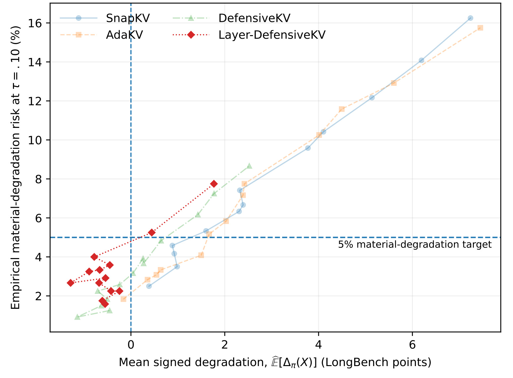
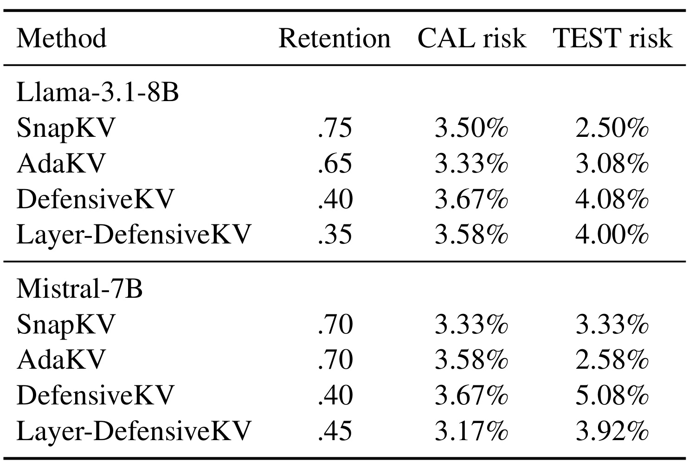
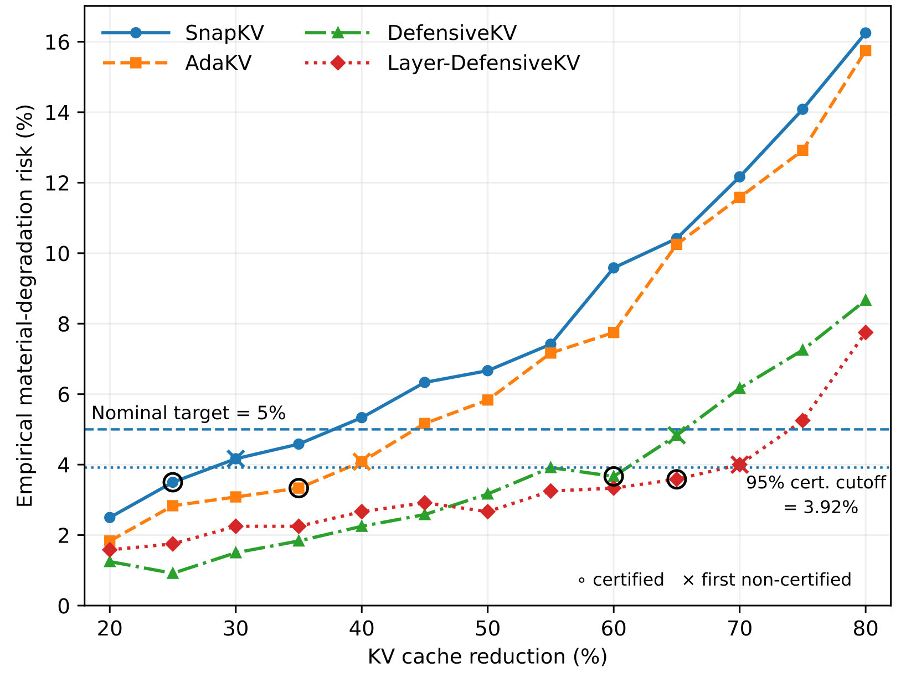
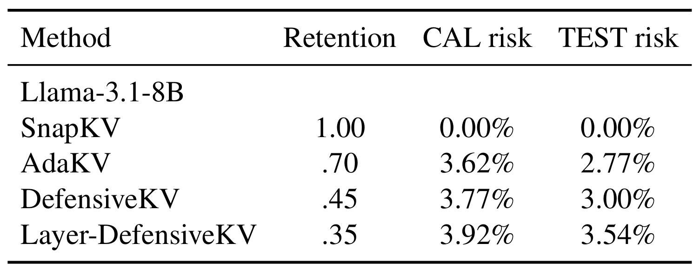
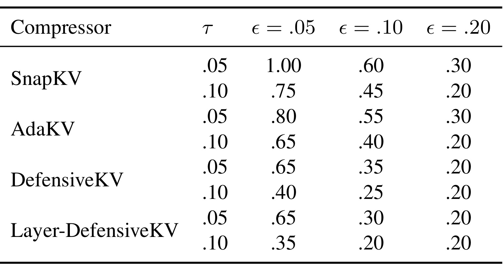
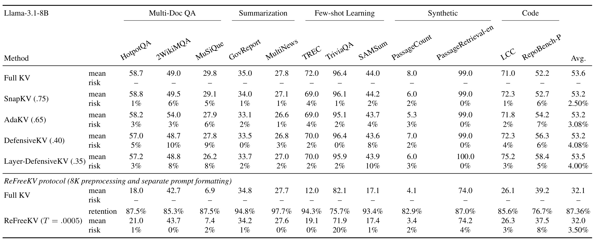

Risk-Controlled KV-Cache Eviction：从内存预算到请求退化风险契约
Beomgu Kang、SoJin Yun、Hojoon Kim、Hyunseok Seo 来自高丽大学人工智能系，在 Risk-Controlled KV-Cache Eviction: From Memory Budgets to Risk Targets 中研究长上下文推理的 KV 缓存淘汰与有限样本风险控制。论文于 2026 年 9 月 23 日首次公开，本笔记记录于 9 月 25 日；已阅读 14 页全文，其中正文第 1–10 页，参考文献第 11–14 页。未核验到独立代码或项目入口。下文区分论文实测、理论条件与本文解释。
KV 缓存淘汰通常用平均质量与内存的权衡评价，但很小的平均损失仍可能掩盖效用明显下降的请求。
1. 背景和问题
长上下文模型的缓存问题有两个互相联系、却不能用同一个指标回答的侧面。资源侧关心一条请求需要保留多少历史 token 的键和值：上下文越长、并发请求越多，缓存就越容易成为显存瓶颈。质量侧关心删掉这些状态后生成结果发生什么变化。许多淘汰方法先接受一个固定预算，再尽量选择重要 token、注意力头或网络层，把有限缓存分配得更有效。这样的设计能画出一条平均任务得分随保留率变化的曲线，但曲线本身没有告诉服务方，有多少用户的请求会遭遇明显变差的回答。
论文把这个差别放到请求配对上理解。同一请求在完整 KV 下可能得八十分，在压缩后得六十分；另一个请求可能从六十分变成八十分。如果只平均两次变化，整体退化为零；但第一个用户确实损失了二十分。改善与退化的抵消在均值统计中是合法的，在“避免用户遭遇严重变差”的服务契约里却不该抵消。作者因此保留原始效用差值的符号来描述均值，同时另建一个事件指标：只有当某条请求的效用下降超过事先约定的容忍量，才记作一次实质退化。两种统计分别回答平均变化与坏事件频率，不能相互替代。
这里的完整 KV 是匹配条件下的参考系统，并不是真实答案的同义词。压缩和完整缓存必须用同一模型、同一提示、同一生成设置、同一评估器，才能把比较解释为淘汰策略带来的相对变化。若同时改变输入截断、提示格式或解码方式，差值就混入其他因素。本研究用归一化到零至一的任务效用，主契约将超过十分之一的下降视为实质退化；在百分制展示中就是下降超过十分。这个定义适用于连续指标，也适用于正确与否等离散指标，但语义会随任务改变。摘要指标下降十分与检索准确率下降十分，不代表相同的用户后果，阈值仍需要业务方解释。

Figure 1 把这个动机变成可观察的证据：横轴是 Llama 在 LongBench 上的平均有符号退化，纵轴是损失超过十分的请求比例，四条曲线分别代表四种缓存淘汰方法，曲线上的点对应不同保留预算。左侧负的横坐标表示平均质量反而提高，并不意味着不存在坏请求；靠近零均值的多个点仍处在不同的纵向风险水平。横向虚线标出百分之五的事件目标，竖线则标出平均退化为零，两条线的含义完全不同。阅读时应先沿相近横坐标比较纵向位置，就能看到“平均分差不多”并不能推出“用户级退化率也差不多”。这比仅观察每条曲线随压缩增强而上升更重要，因为后者只说明淘汰通常有代价，前者才说明原有评价轴不足。
图中的连线也提醒读者，平均指标与风险都可能出现局部波动，不能把经验曲线当成严格单调函数。作者的认证流程并不以风险随保留率单调为定理前提；它用预先固定的检验顺序控制错误认证概率。该图是描述性动机，而非选择策略的完整规则，图上低于百分之五的点仍可能因样本不足而无法认证。横轴以 LongBench 分数点计量、纵轴以请求百分比计量，也不应把两者相减或换算成“每损失一分增加多少固定风险”。它们来自同一批配对效用，却概括了分布的不同方面。后面 Figure 2 将单独解释，为什么经验风险已小于目标，实际认证仍要求更多缓存。
在已有方法中，SnapKV 根据观察窗口识别后续生成可能需要的提示位置，AdaKV 在注意力头之间非均匀分配总预算，DefensiveKV 强化对重要性变化的防御，Layer-DefensiveKV 进一步进行层间分配。这些方法主要解决“保留什么”的问题。本文不替换它们的内部淘汰机制，而是在外层回答“对这组请求，可以把它们开到多激进”。同样的外层可以包住每个请求使用不同缓存量的方法，只要控制请求行为的策略候选事先确定。因此，其新意主要是部署决策口径与统计选择方法，不是发明新的 token 重要性分数，也不是训练一个更强的语言模型。
研究还区分注意力近似与下游任务可靠性。注意力输出误差小，是计算层的保真性质；下游效用不出现明显损失，是任务层的性质。前者很有价值，但不能直接当成后者的同义表达。本文把配对任务效用纳入校准，减少了从中间层误差推到最终用户效果的距离，代价是必须收集带评价结果的校准样本，并为每个候选策略运行足够的离线推理。这种方法适合已有稳定任务定义和可评价请求的部署场景；若开放式助手的效用标注不可靠，统计程序再严密也只能认证那个有噪声的评价目标。
理解论文时应始终分清三个对象：单条请求是否发生退化，任务混合总体中这种事件的真实频率，以及有限校准集是否错误地认可了一个坏策略。主设定中的两个百分之五分别属于后两个对象，不能相乘后解释为单条请求的失败率，也不能把其中任何一个说成“每个任务都保证百分之九十五安全”。这个层次区分贯穿理论、主表和后续任务异质性分析，是阅读整篇论文最值得保留的判断框架。
论文的保守性还有一个部署含义：完整缓存回退是允许的结果，无法认证不需要强行选一个看起来最接近目标的压缩比例。如果资源容量根本无法容纳完整缓存，那么系统还需要容量规划或请求准入机制；本文的统计包装并没有证明回退一定满足生产显存约束。这将质量契约与资源硬约束重新摆在同一张决策桌上，也使认证结果能够诚实地表达当前方案不足。
2. 方法
2.1 请求退化与可靠性契约
方法的输入是一个已确定的模型、评估协议、候选淘汰策略族和目标请求总体；输出是一个通过认证的策略，或者完整 KV 回退。先在同一请求上运行完整缓存与候选策略，把配对效用转为退化量、二元事件与总体风险。论文原式（3）至（5）可合并写成：
符号解释：请求为 $X$，淘汰策略为 $\pi$，完整与压缩缓存的归一化效用分别为 $U_{\mathrm{full}}$ 和 $U_\pi$，$\tau$ 是实质退化阈值，$P$ 是目标总体。严格大于号有含义：恰好下降 $\tau$ 不计入事件。提高质量的请求使有符号退化为负，但其事件指标仍为零，因而不会抵消别的请求产生的一次坏事件。风险是事件的期望，即目标总体中的发生频率，而不是平均损失大小。 可靠性契约包含允许的事件频率和校准错误概率，原式（6）与（7）分别要求：
符号解释：$\epsilon$ 是总体风险上限，$\delta$ 是重复抽取校准集时返回不合格策略的概率上限，$\widehat\pi$ 是由 CAL 选择出的策略。主实验为 $\tau=0.10$、$\epsilon=0.05$、$\delta=0.05$。第二个概率围绕校准样本的随机性取值，不围绕某条上线请求取值。固定一个未来测试集，其经验事件率超过百分之五，并不直接违反这个陈述；真正受约束的是所选策略在声明总体上的风险，且保证本身允许不超过 $\delta$ 的校准失败概率。 资源目标在概念上是以下受限优化，见原式（8）：
符号解释：$\Pi$ 是策略集合，$b(\pi)$ 是保留下来的缓存比例，数值越小才代表压缩越强。请求自适应策略可以把目标替换为期望保留率。作者并未宣称真正求解整个连续策略空间的全局最优值，而是用离散候选序列求一个可认证运行点。这一区别影响“最激进”的含义：它仅指当前测试路径上停止前最后一个获证候选，不是所有可能压缩方案中的最小内存解。
2.2 等额分层校准与有限样本风险检验
LongBench 包含差异很大的任务，直接把所有可得请求拼起来会让样本多的任务支配风险。论文预先定义任务均匀混合总体，并在每个任务抽相同数量的校准请求。原式（9）与（10）的关系为：
符号解释：$H$ 是任务数，$P_h$ 是任务 $h$ 的请求分布，$n$ 是 CAL 总样本数，$q_{ij}$ 是第 $i$ 个校准位置在策略 $j$ 下出现事件的概率。每个任务贡献 $n/H$ 条独立样本，所以样本位置的平均事件概率恰好对应均匀任务总体风险。不同任务的事件概率可以不同，不能因为最后用了二项分布函数，就假定所有观察都来自同一个伯努利参数。总体权重是证书的一部分，改成实际线上流量权重后，原来的等式通常不再代表所需风险。 每个候选的观测输入是事件计数。原式（11）与（12）定义：
符号解释：$K_j$ 是该策略在 CAL 上造成的实质退化次数，$\widehat R$ 是经验风险，$H_j$ 是“风险未低于目标”的零假设。等于目标也放在零假设里，所以获证需要足够证据支持风险严格小于上限，而不是看到观测比例刚好未超标就接受。这样的方向与普通“证明有改善”的检验不同：程序要拒绝的是不安全的假设，错误拒绝才对应错误认证。 由于任务分层，计数是独立但不必同分布的伯努利之和。作者在规定的下尾区间使用 Hoeffding 比较定理，原式（13）给出：
符号解释：$k$ 是整数事件数，$\operatorname{Bin}$ 是二项分布；在零假设下 $\overline q_j\geq\epsilon$，所以以目标风险为参数的二项下尾提供上界。限制区间十分重要，不能把这个比较随意延伸到整个计数范围。直观上，若真实风险至少为目标，却观察到很少的坏事件，这种低计数的罕见程度可以构成反驳不安全假设的证据。异质任务的困难由有效上界处理，代价可能是保守性。 原式（14）据此构造有效的校准 $p$ 值：
符号解释：$p_j^{\mathrm{env}}$ 是用于认证候选 $j$ 的检验量；只有到达这个候选并满足 $p_j^{\mathrm{env}}\leq\delta$ 才通过。对于 $n=1200$ 和两个百分之五，最大可认证计数为 47，对应约百分之三点九二，明显低于名义百分之五。把小于百分之五的经验风险直接当成证书，等于忽略有限样本不确定性；本方法正是在这个位置把可靠性要求变成额外保留缓存的实际代价。
2.3 固定顺序检验与完整缓存回退
固定预算候选按保守到激进预先排列：从保留百分之八十开始，每次减少五个百分点，直到百分之二十。模型、压缩器、基准三者共同定义一条独立确认性序列。查看 CAL 之前必须固定候选、顺序以及三个契约参数；若压缩器本身还需拟合或调参，必须使用其他数据。程序沿固定顺序逐一检验，遇到第一个不能认证的候选立即停止，返回上一个已认证策略；第一个候选就失败则返回完整 KV。 把论文停止规则显式写成等价记号，可以更容易检查实现：
符号解释：$m$ 是候选数量，$J$ 是从第一个候选开始连续通过的前缀长度，空前缀取零。这个写法是对正文算法的等价整理，不是新增理论公式。注意它不等于在所有 $p$ 值合格候选中任取内存最少的一个；一旦中途失败，后面即使存在单独可通过的点，也不能再用它更新确认性选择。作者为了画描述性曲线可能运行停止点后的候选，但这些结果不参与选择。
固定顺序为何能控制多次测试？若序列中存在真实风险不合格的候选，任何错误认证都必然先错误拒绝“第一个为真的零假设”；该次检验的有效 $p$ 值把其概率限制在 $\delta$ 内。因此整个序列不需要假设不同候选的 $p$ 值独立，也不要求风险随保留率严格单调。它所换取的代价是可能错过后面一些实际上安全的候选。这是认证有效性与资源利用率的权衡，而非实现缺陷。完整 KV 与配对参考相同，退化按定义为零，故回退在当前相对风险定义下天然满足契约。
这也解释了训练与推理的区别：论文没有修改语言模型训练目标，所谓校准是离线运行候选并统计结果；部署推理只执行已冻结的策略，不为每条线上请求再跑一遍完整 KV 来认证。每个模型和压缩器都得到一个单独结果，并不意味着读完所有结果后挑最省内存的方法，仍自动享有相同的联合置信保证。跨序列选择或事后改顺序需要新的校准数据或适当多重比较控制。
2.4 请求自适应保留策略
ReFreeKV 用一个全局阈值决定每条请求的保留量；同一阈值在不同输入上可以产生不同缓存比例。包装方法因此把阈值视为候选策略身份，而非强迫每条请求保留相同比例。论文预设十个阈值，从 0.0005、0.001、0.002、0.003、0.005 依次增加到 0.0075、0.01、0.015、0.02、0.03，按原压缩器意图由保守走向激进。每个阈值同样产生配对效用和事件计数，再使用相同检验与停止规则；冻结阈值以后，才在 TEST 上估计平均保留比例与分任务保留比例。
这里认证的是策略造成的任务效用风险，不是给每条请求的内存使用量加上界。输入更难时，压缩器可以保留更多状态，但这种自适应本身并不推出风险更小，也不能推出各任务同样可靠。实现者还需要注意 ReFreeKV 实验采用独立的八千 token 预处理协议和提示格式，其完整 KV 参考同样使用该预处理。证书覆盖压缩相对该参考的差异，不覆盖此前截断上下文造成的损失。把这个协议的平均保留率直接与另一协议比较，会混淆可用输入、绝对任务质量和缓存压缩三件事。
3. 实验结果
3.1 LongBench：同一契约返回不同运行点
主实验使用 Llama-3.1-8B-Instruct 与 Mistral-7B-Instruct-v0.3，在 RTX A6000 48GB GPU 上评价四种固定预算压缩器。固定预算实现采用 FlashAttention-2，观察窗口为 32、核大小为 5，AdaKV 额外使用 0.2 的分配超参数。保留率相对于处理后的 prefill 长度计算，观察窗口计入预算，并遵循各实现对头和层的整数分配规则。全部生成使用贪心解码，避免随机解码差异进入配对退化统计。论文没有报告端到端延迟或吞吐，因此这些设定只能支持缓存比例与质量风险的比较。
LongBench 选入预处理后至少有二百个不同上下文的十二个任务。每个任务用固定随机种子选二百条请求，随机拆成互不重叠的一百条 CAL 和一百条 TEST，两集合各一千二百条。任务选择规则与主契约在观察 CAL 前固定，TEST 只用于描述冻结策略的泛化表现。虽然有限语料实验采用无放回抽取和分割，理论部分把各任务内请求建模为独立总体抽样；在真实部署复用时，需要让采样设计确实支撑这一假设，不能把相关会话拆成许多“独立请求”虚增有效样本量。

Table 1 的第一列给出压缩器，第二列是保留比例，后两列是 CAL 与 TEST 实质退化率。Llama 上 SnapKV、AdaKV、DefensiveKV、Layer-DefensiveKV 分别保留百分之七十五、六十五、四十、三十五，对应 TEST 风险百分之二点五零、三点零八、四点零八、四点零零。同一个风险契约因压缩器而产生很不一样的缓存选择。尤其 SnapKV 的百分之七十五是“保留”，意味着名义删掉四分之一缓存，不能误读为节省四分之三。DefensiveKV 两个版本允许更低保留率，显示 token 与层预算分配方式会改变契约可接受的运行区域。
跨模型也没有固定排名：Mistral 上四种方法分别保留百分之七十、七十、四十、四十五，Layer-DefensiveKV 反而比不做该层分配扩展的版本保留更多。该结果不支持“某种扩展在所有模型都更省缓存”的结论，更适合说明必须针对模型与数据重新校准。两个模型八种配置中，七个 TEST 经验风险小于百分之五；Mistral 的 DefensiveKV 为 61/1200，即百分之五点零八，只比恰好百分之五多一个事件。它不直接推翻 CAL 证书，因为证书不是对这一个有限 TEST 比例作确定性约束；同样，它也不能被简单忽略成“没有风险”，而应该与样本不确定性及真实部署总体一起看。
这张主表还能帮助识别研究的评价方式：作者没有让每个算法都用同样少的缓存后再比平均得分，而是固定同一个请求风险契约，看各自能被允许使用多大的压缩强度。因此第二列本身成为主要比较结果，CAL 风险不是训练损失，TEST 风险也不是错误回答率。四个算法的底层能力、候选网格与评价总体共同决定最终运行点，不能把表中数值推广为算法的永久默认参数。
3.2 有限样本认证要付出多少额外缓存

Figure 2 的横轴改为缓存削减百分比，所以越往右压缩越激进；纵轴仍是损失超过十分的经验事件率。虚线为百分之五的名义目标，点线约为百分之三点九二的可认证截断值，圆圈是最后通过的候选，叉号是紧接着第一个失败候选。这两个水平线之间的空间，就是有限样本不确定性在部署参数上的具体表现。研究不是用更低风险标准偷偷替换了原来契约，而是在有限数据中要求更充分证据，才能支持总体风险不超原目标。不同算法的曲线形状也说明，即便可认证计数一样，额外保留五个百分点缓存带来的风险变化仍不同。
四种方法的首次失败点分别是 SnapKV 保留百分之七十时 50 个事件，AdaKV 保留百分之六十时 49 个，DefensiveKV 保留百分之三十五时 58 个，Layer-DefensiveKV 保留百分之三十时 48 个。它们对应的经验风险分别为百分之四点一七、四点零八、四点八三和四点零零，全部低于名义百分之五，却全部超过可认证的 47 次上限。如果用简单观测阈值接受策略，一千二百条请求中最多六十次事件都可以通过；相较之下，认证会多保留五至十个百分点的缓存。这里应该报告“多保留多少个百分点”，不能误写成质量提高五至十个百分点，或内存相对增加固定百分比。
Layer-DefensiveKV 提供一个直接对照：经验阈值法选择保留百分之三十，认证选择百分之三十五；在同一批 TEST 请求上，前者有 64 次事件，即百分之五点三三，后者有 48 次，即百分之四。这展示了运行点变化可能带来的请求级影响，但论文谨慎指出它不构成已完成的配对显著性检验，也不能据此断言百分之三十策略的真实总体风险一定大于百分之五。统计证据“不够认证”和事实“已经不安全”不是同一个判断。整个图含有停止后的描述性评估点，只有固定前缀参与确认性选择；不能在图中寻找一个后续低点然后绕过停止规则。
3.3 RULER-32K：更换总体以后重新校准
RULER 用十三种受控长上下文任务覆盖针检索、变量跟踪、词提取与问答，统一在三万二千 token 长度下评价。每个任务仍是各一百条 CAL 与 TEST，两集合总数各一千三百条，因此最大可认证次数变为 51，经验截断比例仍约百分之三点九二。作者没有把 LongBench 的运行点直接移植过来，而是独立完成候选测试。该设计使“同一契约在不同负载下选出不同参数”成为有效比较，同时避免把分布迁移误说成已经得到保证。

Table 2 中最显眼的是 SnapKV 保留率变成一，CAL 与 TEST 风险都为零。这一行表示返回完整 KV，因为第一个保留百分之八十的压缩候选已经在 CAL 上产生 135/1300 次事件，即百分之十点三八，无法认证。零风险来自与完整 KV 参考完全一致的定义，并不表示 RULER 所有问题都答对，也不表示 SnapKV 获得了零损失压缩。候选序列没有测试百分之八十与一百之间的比例，所以这一回退不能证明每个压缩比例都不可行；它只说明所测确认性路径没有任何可返回的压缩候选。
另外三种压缩器仍有可认证运行点。AdaKV 保留百分之七十，TEST 风险百分之二点七七；DefensiveKV 保留百分之四十五，TEST 风险百分之三；Layer-DefensiveKV 保留百分之三十五，TEST 风险百分之三点五四。最后一种 CAL 风险为百分之三点九二，恰好位于该样本量的认证边界附近。由此只能说 Llama 的 SnapKV 在 RULER 触发回退，不能把结果概括为“RULER 上所有压缩都不可靠”。不同算法对受控长程信息的保护能力，确实会改变同一契约下能删多少缓存。
这张表同时埋下总体均匀混合的边界。RULER 的常见词提取任务上，三种已认证压缩器的 TEST 事件率分别达到百分之九、十五、二十九，远高于总体的百分之五目标。总体认证允许低风险任务与高风险任务混合，尽管事件指标已经阻止单请求效用改善抵消坏事件，它仍不能阻止不同任务风险被平均。这不是公式失效，而是被认证目标原本就定义为任务混合。若产品将这种词提取任务视为特别重要，就需要另行声明任务级契约或重设目标权重，并使用对应的校准设计。
3.4 契约敏感性：阈值选择必须先于确认性校准

Table 3 用保存的 Llama CAL 配对效用重新计算两个损失阈值与三个风险频率目标。每格仍按同样固定顺序与百分之五校准错误水平选保留率，但除原主契约外属于事后探索，不构成整张表同时成立的置信保证。风险频率固定为百分之五时，将容忍下降从十分收紧到五分，Layer-DefensiveKV 的保留率由百分之三十五升到六十五，SnapKV 则由百分之七十五变为完整 KV 回退。这说明内存点不是压缩器孤立拥有的性能常数，而是由“下降多少算严重”与“允许多常见”共同决定。
另一方面，放宽频率到百分之二十时，八个对应组合中有六个达到网格最低保留率百分之二十。这个边界只说明所测网格已经走到底，不等于连续空间真正的最优点就是百分之二十，也不保证再压缩仍可接受。若只看这个表挑最省内存的阈值，再引用原本单个契约的置信水平，就把探索数据复用于确认性决策。实际应用可在独立开发集上研究可接受损失，然后冻结契约，换新 CAL 做正式认证；若要同时比较多个契约，必须使用适当多重检验控制。图表提供的是敏感性地图，帮助设计后续实验，不是随意放宽业务风险的统计许可。
还需要区分两种放宽方式的含义。增大实质退化阈值，让一些中等损失不再计入事件；增大风险上限，则仍把同样损失视为事件，只是容许它更频繁。这两者可能得到相近缓存比例，却对应不同用户体验。校准程序不会替业务方做这种价值判断，它只把已经明确的契约转换为候选选择。因此报告最终保留率时，三个参数以及总体定义必须一起记录，否则后来的读者无法知道节省资源的代价到底是什么。
3.5 自适应缓存与任务异质性
请求自适应 ReFreeKV 在独立八千 token 协议中，用阈值 0.0005 获得认证：CAL 为 39/1200 次事件，即百分之三点二五；下一个阈值 0.001 尽管经验风险只有百分之四点四二，仍失败。选中策略在 CAL 平均保留百分之八十七点四八，在 TEST 保留百分之八十七点三六，TEST 为 42/1200 次事件，即百分之三点五。它证明包装方式能用于阈值控制的可变缓存策略，并未证明自适应一定比固定预算更节省。该实现用 eager attention，输入预算为 8192 减任务生成上限再减二十 token，长输入取可用预算的首尾两半，提示格式也可能不同，故不能与前面固定预算实验作直接绝对效用或效率排名。

Table 4 上半部是固定预算协议，下半部明确分出 ReFreeKV 协议，并为后者给出独立完整 KV 参考。固定预算完整 KV 的任务平均效用为 53.6，四种压缩器总体均值为 53.2、53.2、53.2、53.5，看起来差异很小；对应的请求事件率却从百分之二点五到四点零八不同，局部任务还可能达到百分之十。例如 DefensiveKV 在 2WikiMQA 为百分之十，Layer-DefensiveKV 在 SAMSum 为百分之十。表中均值和风险按同一任务上下排列，恰好让读者检查“得分接近”是否掩盖不同请求损失分布。每个任务只有一百条 TEST 请求，一个事件就是一个百分点，因此不能忽略分任务估计的不确定性。
下半部更突出自适应策略的边界。ReFreeKV 总体平均效用仅从 32.1 变到 32.0，但 TriviaQA 事件率达到百分之二十；各任务平均保留率从 TriviaQA 的百分之七十五点七，到 MultiNews 的百分之九十七点七，相差明显。自适应预算并没有自动把每个任务的风险拉平。完整 KV 的总体均值也明显不同于上半部，因此横跨上下两组拿 32 与 53 比压缩能力，是忽略预处理协议的错误。证书只约束同组内压缩与完整缓存之间的差异，不能把被裁掉的输入信息也算进已控制的风险。
作者进一步对所有 147 个非完整回退的策略—任务组合做事后同时区间分析，使用双侧 Clopper–Pearson 区间和 Bonferroni 校正。即使如此，RULER 常见词提取的 Layer-DefensiveKV 为 29/100，区间约百分之十四点六至四十七点一；DefensiveKV 为 15/100，区间约百分之五点一至三十一点一；LongBench ReFreeKV 的 TriviaQA 为 20/100，区间约百分之八点二至三十七点一。三个下界均超过百分之五，支持确实存在高风险子任务，而非仅仅看到噪声尖峰。但这项事后 TEST 分析不回流修改已选策略，也不能被包装成原先就有逐任务保证。
绝对质量还有另一层限制：固定预算协议的一千二百条 TEST 请求中，完整 KV 有 253 条效用为零；更一般地，只要完整 KV 效用不超过实质损失阈值，非负的压缩效用就不可能再下降超过阈值。一个本来不会答的系统，在这些请求上容易得到零相对退化风险，却没有变成高质量系统。因此低风险结果必须与完整参考的绝对效用并列报告，不能独立成为可靠回答的证据。本文的相对风险指标有明确用途，也有明确盲区；任务表之所以必要，正是为了让这些盲区不被一行总体认证结论遮住。
4. 总结
这篇论文把 KV 缓存部署从“先给预算，再看平均质量”改成“先约定实质退化与允许频率，再用独立校准选择预算”。主要贡献是把请求配对效用、任务均匀总体、有限样本有效检验和固定顺序回退连接成完整决策程序。它可以保留已有压缩器，只改变运行点选择规则；实验则展示了这种选择真的会多保留五至十个百分点缓存，并在不适合的候选序列上返回完整 KV。对研究者而言，价值不只是另一个保留率结果，而是能明确说出一个结果对哪个总体、哪个契约、哪条候选序列负责。
局限首先在总体。任务内请求独立、任务权重固定，是理论解释的重要条件；真实服务存在会话相关、重复文档和流量结构变化时，不能直接沿用表中证书。其次在效用定义：统一十分损失阈值跨任务语义不同，且相对完整缓存的低退化不代表高绝对质量。第三在策略搜索：固定顺序方法不需要单调性，但会在第一次失败后停止，可能错过后面安全且更省内存的候选；百分之八十至一百等未测试区间也限制了回退结论。第四在联合推断：每条模型—压缩器—基准序列分别认证，不能事后从许多序列或契约中择优，却继续声称原置信度自动覆盖整个选择过程。
另外，实证只涵盖两个七至八十亿参数模型家族与有限压缩器，未覆盖大模型、不同架构及更多服务实现。论文没有直接测端到端延迟、吞吐、峰值显存和离线校准总开销，保留率减少不等于可按同比例改善服务成本。ReFreeKV 使用独立预处理与注意力实现，还限制了跨方法效率比较。任务表显示聚合保证下仍可出现高风险子任务，提示实际产品若有必须保护的少数请求类型，需要在契约定义阶段明确处理，而不能等汇总指标合格后再假定它们自然安全。
后续最值得做的第一项工作，是在固定模型与实际任务分布上重建配对校准集，保留开发、校准、测试边界，并检验相关样本是否影响有效样本量。第二项是把保护目标从均匀任务总体细化到关键任务，预先决定多任务同时保证或业务权重，量化这样做额外需要多少数据与缓存。第三项是给获证策略补齐服务系统测试，至少测预填充与解码延迟、峰值显存、吞吐以及离线候选评估成本，判断统计可靠性付出的资源代价是否值得。若还想尝试更细候选网格或其他检验顺序，应另做预注册选择设计，避免用已有 CAL 曲线反复挑出看起来最好的流程。
在复核结果时，还应保存每条请求的配对效用与最终事件计数，而不只保存四舍五入后的风险百分比。边界附近一个事件就可能改变是否获证，精确计数、样本量和严格阈值定义才能让认证决定可复查。
可带走的实践判断是：平均分几乎没变，只能作为总体效用描述，不能充当请求级可靠性证明；观测退化率低于目标，也需要校准不确定性的处理。本文给出一个清晰的、可以包在压缩器外面的认证方案，但不会替代任务定义、采样设计和系统性能测量。只有将契约、目标总体、参考协议及候选顺序一起冻结，最终保留率才具有可解释、可重复的统计意义。